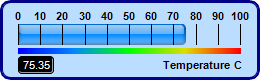
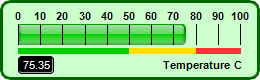
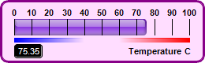
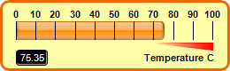
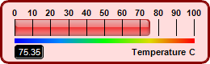
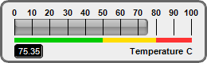

This example demonstrates horizontal bar meters in various colors, with different color scales, and with title and value readout.
BaseMeter.addColorScale is used to create the color scales in the meters. The color scales are created by with different colors, different end point positions and different widths at the end points.
The title and value readout are created using
BaseChart.addText. The value readout is configured to have a black background and a depressed border using
Box.setBackground, and with rounded corners using
Box.setRoundedCorners.
The following is the command line version of the code in "cppdemo/colorhbarmeter". The MFC version of the code is in "mfcdemo/mfcdemo". The Qt Widgets version of the code is in "qtdemo/qtdemo". The QML/Qt Quick version of the code is in "qmldemo/qmldemo".
#include "chartdir.h"
void createChart(int chartIndex, const char *filename)
{
// The value to display on the meter
double value = 75.35;
// The background, border and bar colors of the meters
int bgColor[] = {0xbbddff, 0xccffcc, 0xffddff, 0xffffaa, 0xffdddd, 0xeeeeee};
const int bgColor_size = (int)(sizeof(bgColor)/sizeof(*bgColor));
int borderColor[] = {0x000088, 0x006600, 0x880088, 0xee6600, 0x880000, 0x666666};
const int borderColor_size = (int)(sizeof(borderColor)/sizeof(*borderColor));
int barColor[] = {0x0088ff, 0x00cc00, 0x8833dd, 0xff8800, 0xee3333, 0x888888};
const int barColor_size = (int)(sizeof(barColor)/sizeof(*barColor));
// Create a LinearMeter object of size 260 x 80 pixels with a 3-pixel thick rounded frame
LinearMeter* m = new LinearMeter(260, 80, bgColor[chartIndex], borderColor[chartIndex]);
m->setRoundedFrame(Chart::Transparent);
m->setThickFrame(3);
// Set the scale region top-left corner at (18, 24), with size of 222 x 20 pixels. The scale
// labels are located on the top (implies horizontal meter)
m->setMeter(18, 24, 222, 20, Chart::Top);
// Set meter scale from 0 - 100, with a tick every 10 units
m->setScale(0, 100, 10);
if (chartIndex % 4 == 0) {
// Add a 5-pixel thick smooth color scale at y = 48 (below the meter scale)
double smoothColorScale[] = {0, 0x0000ff, 25, 0x0088ff, 50, 0x00ff00, 75, 0xdddd00, 100,
0xff0000};
const int smoothColorScale_size = (int)(sizeof(smoothColorScale)/sizeof(*smoothColorScale));
m->addColorScale(DoubleArray(smoothColorScale, smoothColorScale_size), 48, 5);
} else if (chartIndex % 4 == 1) {
// Add a 5-pixel thick step color scale at y = 48 (below the meter scale)
double stepColorScale[] = {0, 0x00cc00, 50, 0xffdd00, 80, 0xff3333, 100};
const int stepColorScale_size = (int)(sizeof(stepColorScale)/sizeof(*stepColorScale));
m->addColorScale(DoubleArray(stepColorScale, stepColorScale_size), 48, 5);
} else if (chartIndex % 4 == 2) {
// Add a 5-pixel thick high/low color scale at y = 48 (below the meter scale)
double highLowColorScale[] = {0, 0x0000ff, 40, Chart::Transparent, 60, Chart::Transparent,
100, 0xff0000};
const int highLowColorScale_size = (int)(sizeof(highLowColorScale)/sizeof(*highLowColorScale));
m->addColorScale(DoubleArray(highLowColorScale, highLowColorScale_size), 48, 5);
} else {
// Add a 5-pixel thick high only color scale at y = 48 (below the meter scale)
double highColorScale[] = {70, Chart::Transparent, 100, 0xff0000};
const int highColorScale_size = (int)(sizeof(highColorScale)/sizeof(*highColorScale));
m->addColorScale(DoubleArray(highColorScale, highColorScale_size), 48, 0, 48, 8);
}
// Add a bar from 0 to value with glass effect and 4 pixel rounded corners
m->addBar(0, value, barColor[chartIndex], Chart::glassEffect(Chart::NormalGlare, Chart::Top), 4)
;
// Add a label right aligned to (243, 65) using 8pt Arial Bold font
m->addText(243, 65, "Temperature C", "Arial Bold", 8, Chart::TextColor, Chart::Right);
// Add a text box left aligned to (18, 65). Display the value using white (0xffffff) 8pt Arial
// Bold font on a black (0x000000) background with depressed rounded border.
TextBox* t = m->addText(18, 65, m->formatValue(value, "2"), "Arial", 8, 0xffffff, Chart::Left);
t->setBackground(0x000000, 0x000000, -1);
t->setRoundedCorners(3);
// Output the chart
m->makeChart(filename);
//free up resources
delete m;
}
int main(int argc, char *argv[])
{
createChart(0, "colorhbarmeter0.png");
createChart(1, "colorhbarmeter1.png");
createChart(2, "colorhbarmeter2.png");
createChart(3, "colorhbarmeter3.png");
createChart(4, "colorhbarmeter4.png");
createChart(5, "colorhbarmeter5.png");
return 0;
}
© 2023 Advanced Software Engineering Limited. All rights reserved.